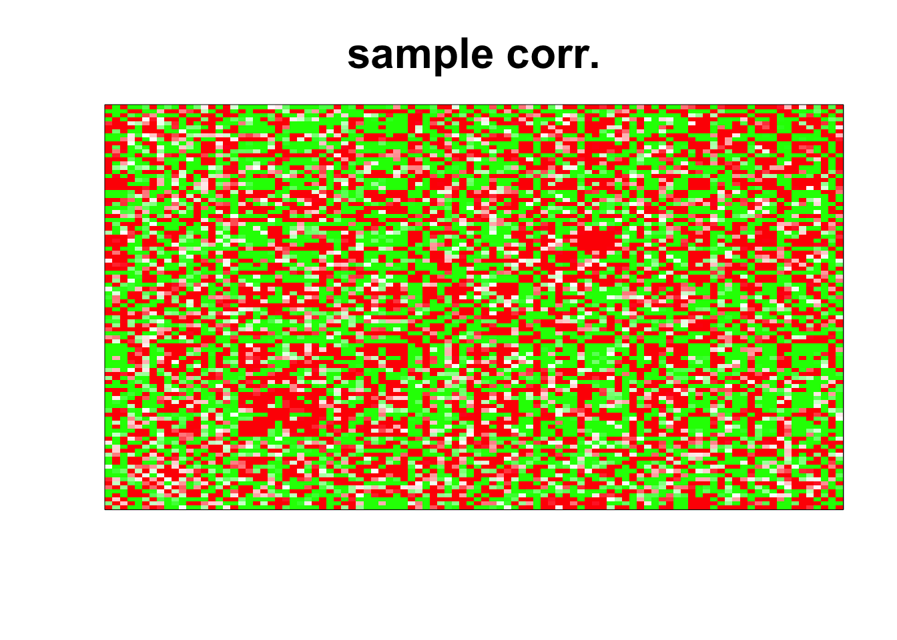
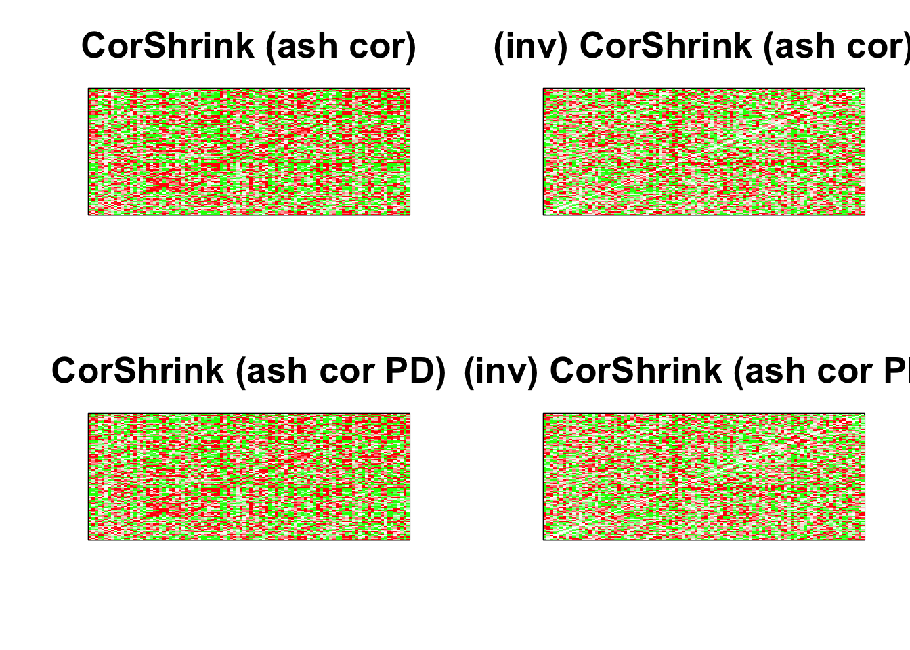

Inverse Covariance Hub
We now generate sparse inverse covariance matrix using the hglasso package and then generate data from a normal distribution with that inverse covariance matrix parameter, and then apply covariance or correlation estimation methods such as corpcor, CorShrink and GLASSO.
library(hglasso)
ihubnet <- HubNetwork(100,0.95,30,0.1)$Theta
hubnet <- solve(ihubnet)
ihubnet2 <- solve(cov2cor(hubnet))Image of the correlation matrix and the
col=c(rep(rgb(0,1,0), 10000),rev(rgb(seq(1,0,length=1000),1,seq(1,0,length=1000))),
rgb(1,seq(1,0,length=1000),seq(1,0,length=1000)), rep(rgb(1,0,0),10000))
par(mfrow = c(1,2))
image(cov2cor(hubnet),
col=col, main=paste0("pop corr mat"), cex.main=1,
xaxt = "n", yaxt = "n", zlim=c(-1,1))
image(ihubnet2,
col=col, main=paste0("pop inv corr mat"), cex.main=1,
xaxt = "n", yaxt = "n", zlim=c(-1,1))Now we generate a data matrix under the above model.
data <- MASS::mvrnorm(50, rep(0, 100), hubnet)sample correlation matrix
image(as.matrix(cor(data)),
col=col, main=paste0("sample corr."), cex.main=2,
xaxt = "n", yaxt = "n", zlim=c(-1,1))
corpcor
strimmer_sample <- corpcor::cor.shrink(data)## Estimating optimal shrinkage intensity lambda (correlation matrix): 0.4579par(mfrow = c(1, 2))
image(cor(strimmer_sample),
col=col, main=paste0("shafer strimmer: "), cex.main=2,
xaxt = "n", yaxt = "n", zlim=c(-1,1))
image(solve(cor(strimmer_sample)+0.001*diag(1,dim(strimmer_sample)[2])),
col=col, main=paste0("(inv) shafer strimmer"), cex.main=2,
xaxt = "n", yaxt = "n", zlim=c(-1,1))
CorShrink
cov_sample_ML <- CorShrink::CorShrinkData(data, sd_boot = FALSE, optmethod = "mixEM",
ash.control = list(mixcompdist = "normal", nullweight = 1))## ash cor only and ash cor PD matrices are differentpar(mfrow = c(2, 2))
image(as.matrix(cov_sample_ML$ash_cor_only),
col=col, main=paste0("CorShrink (ash cor)"), cex.main=2,
xaxt = "n", yaxt = "n", zlim=c(-1,1))
image(solve(cov_sample_ML$ash_cor_only),
col=col, main=paste0("(inv) CorShrink (ash cor)"), cex.main=2,
xaxt = "n", yaxt = "n", zlim=c(-1,1))
image(as.matrix(cov_sample_ML$ash_cor_PD),
col=col, main=paste0("CorShrink (ash cor PD)"), cex.main=2,
xaxt = "n", yaxt = "n", zlim=c(-1,1))
image(solve(cov_sample_ML$ash_cor_PD),
col=col, main=paste0("(inv) CorShrink (ash cor PD)"), cex.main=2,
xaxt = "n", yaxt = "n", zlim=c(-1,1))
Note that in this case the results from CorShrink is not very stable, and also the matrix after PD adjustment is very different from the one before PD adjustment when viewed in terms of their inverse correlation estimates.
glasso
We run GLASSO using cross-validation with different levels of intensities and then presenting the image results for the best fit.
K <- 20
n <- dim(data)[1]
rho_array <- c(0.005, 0.01, 0.05, 0.1, 0.15, 0.2, 0.25, 0.3, 0.35, 0.4, 0.45,
0.5, 0.55, 0.6, 0.65, 0.70, 0.75, 0.8, 0.85, 0.9, 0.95, 1,
1.5, 2, 3, 4, 5, 7, 9, 10, 20, 50, 100)
covmat <- cov(data)
score<- array(0, length(rho_array))
for(num in 1:length(rho_array)){
temp <- array(0, K)
for(k in 1:K){
cross_train <- sample(1:n, round(0.2*n), replace = FALSE)
cross_test <- setdiff(1:n, cross_train)
covmat_train <- cov(data[cross_train,], use = "pairwise.complete.obs")
covmat_test <- cov(data[cross_test,], use = "pairwise.complete.obs")
glasso_train <- as.matrix(cov2cor(glasso::glasso(covmat_train, rho = rho_array[num])$w))
temp[k] <- -log(det(glasso_train)) - psych::tr(covmat_test %*% solve(glasso_train))
}
cat("We are at num", num, "\n")
score[num] <- mean(temp)
}## We are at num 1
## We are at num 2
## We are at num 3
## We are at num 4
## We are at num 5
## We are at num 6
## We are at num 7
## We are at num 8
## We are at num 9
## We are at num 10
## We are at num 11
## We are at num 12
## We are at num 13
## We are at num 14
## We are at num 15
## We are at num 16
## We are at num 17
## We are at num 18
## We are at num 19
## We are at num 20
## We are at num 21
## We are at num 22
## We are at num 23
## We are at num 24
## We are at num 25
## We are at num 26
## We are at num 27
## We are at num 28
## We are at num 29
## We are at num 30
## We are at num 31
## We are at num 32
## We are at num 33glasso_sample <- glasso::glasso(cov(data), rho = rho_array[which.max(score)])
par(mfrow = c(1, 2))
image(as.matrix(cov2cor(glasso_sample$w)),
col=col, main=paste0("glasso"), cex.main=2,
xaxt = "n", yaxt = "n", zlim=c(-1,1))
image(as.matrix(cov2cor(glasso_sample$wi)),
col=col, main=paste0("glasso (inv)"), cex.main=2,
xaxt = "n", yaxt = "n", zlim=c(-1,1))